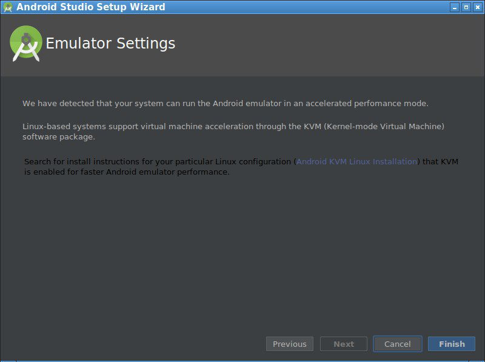

Дистрибутив лучше всего брать с официального сайта Google.
Перед установкой нужно убедиться, что есть около 7Gb свободного места на диске. Net-Install одной только Студии занимает около 1Gb, а SDK, NDK и всякие дополнительные библиотеки занимают более 5Gb.
В системе уже должна стоять реализация java, например /opt/jdk1.8.0_162.
Устанавливать лучше в каталог /opt. В процессе установки нужно будет создать примерно такие директории:
android-studio-ide-181
android-studio-sdk
После того как установится Android Studio и запустится, должно появиться такое окно:
Нажимаете кнопку Configure и выбираете SDK Manager. В процессе настройки будет запрос на установки эмлятора Android. Но в новых версиях kvm нет программы kvm-ok, и студия будет ругаться, что эмуляция с аппаратным ускорением невозможна. В этом окне надо нажать Finish а не Next:

После этого начнется выкачивание последнего SDK и его устанавка. После чего нужно открыть ется окно настроек: